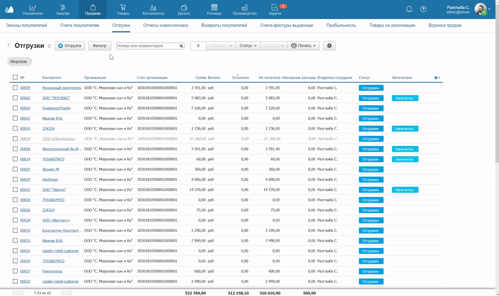
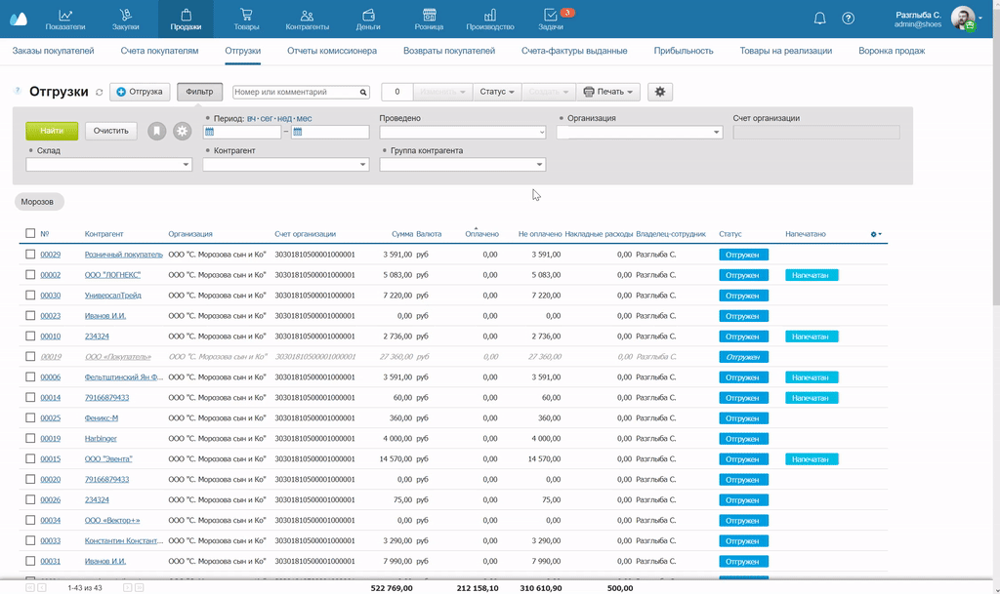

В таблицах МоегоСклада можно настраивать и сохранять фильтры. С помощью фильтров на экране можно оставить только нужные поля, а остальные не будут мешать.
Рассмотрим работу с фильтрами на примере раздела Отгрузки.
- Чтобы добавить или убрать поля, нажмите на кнопку Фильтр, а затем на шестеренку.

- Чтобы применить фильтр, нажмите на стрелку рядом с названием поля, выберите из выпадающего списка нужный параметр и нажмите на кнопку Найти.

- Чтобы каждый раз не выбирать одни и те же параметры фильтра, сохраните их. Для этого после применения фильтра нажмите на «закладку» в первой строке серого поля. Введите название и нажмите Сохранить закладку. Закладка появится ниже поля фильтров.

- Если захотите поменять сохраненные фильтры местами, перетяните закладки вправо или влево.

- Чтобы следующий раз использовать фильтр, нажмите на закладку. Фильтр сработает автоматически.